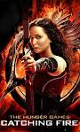
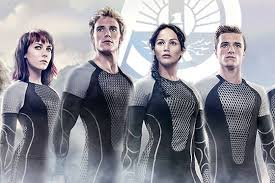

The Hunger Games: Catching Fire
The Hunger Games: Catching Fire is a 2013 American dystopian science fiction action film directed by Francis Lawrence based on the 2009 novel Catching Fire by Suzanne Collins. The sequel to The Hunger Games (2012), it is the second installment in The Hunger Games film series.
As the second installment in the series, Catching Fire begins a few months after Katniss Everdeen (Jennifer Lawrence) and fellow District 12 tribute Peeta Mellark (Hutcherson) have returned home safely after winning the 74th Annual Hunger Games. Throughout the story, Katniss senses that a rebellion against the oppressive Capitol is simmering among the districts. As the third "Quarter Quell" is approaching Katinss and Peeta are preparing to be in the 75th Hunger Games with previous victors.
Catching Fire received positive reviews and is considered by critics to be an improvement over the first in the series with the sentiment being that it's a more-confident, more-polished movie. The Song Atlas was nominated for a Grammy and a Golden Globe.
Cast
Jennifer Lawrence as Katniss Everdeen
Liam Hemsworth as Gale Hawthorne
Elizabeth Banks as Effie Trinket
Josh Hutcherson as Peeta Mallark
Woody Harrelson as Haymitch Abernathy
Donald Sutherland as President Coriolanus Snow
Plot
Katniss Everdeen and Peeta Mellark have settled into a life of material comfort and emotional unease back in District 12 following their joint victory in the 74th Hunger Games. President Snow visits Katniss and explains that her actions in the Games — specifically, her would-be suicide pact with Peeta — have inspired uprisings across Panem. He orders her to use the upcoming Victory Tour to convince him that her actions were out of love and not defiance against the Capitol, warning her that her friends, family, and everyone else in District 12 will otherwise face execution. Katniss' mentor, Haymitch, later warns her that Victors of the games must serve as mentors to future tributes and that their show of love will be forced to continue for the rest of their lives.Unrest and protests are on display in many Districts over the course of the Victory Tour, as is brutality by local Peacekeepers. Peeta and Katniss subsequently announce their engagement in an attempt to quell the Districts. At an upper-class party concluding the tour, Snow publicly toasts them but subtly signals to Katniss that he remains unconvinced. During the festivities, Katniss meets enigmatic new head Gamemaker Plutarch Heavensbee. Peacekeepers led by the brutal Commander Romulus Thread begin to mercilessly raid homes and other places throughout District 12, placing the citizens under curfew. Katniss's friend Gale is publicly whipped after tackling Thread to stop him from killing civilians; he is saved by Katniss and the other victors. Heavensbee tells Snow that the rebellion cannot survive Katniss new celebrity status as a victor.
The upcoming 75th Hunger Games - the third "Quarter Quell" — is announced, with tributes set to be selected from previous victors. Katniss devotes herself to ensuring Peeta survives. On Reaping Day, Haymitch's name is drawn, but Peeta immediately volunteers to take his place. The adult tributes, accustomed to a safe and comfortable life as victors, are openly angry about being forced to return to the Games. For her pre-Games interview, Katniss wears a wedding dress, as ordered by Snow, but her stylist Cinna sets it to transform into a symbol of a mockingjay. As an effort to stop the games, Peeta lies during his interview, saying that he and Katniss have married in secret and are expecting a child, which leads to fruitless protests from citizens for the Games to be stopped. Just before Katniss enters the arena, Cinna is beaten to death by Peacekeepers in front of her as punishment for tampering with her dress.In the Games, Katniss and Peeta ally themselves with the District 4 tributes, playboy Finnick Odair and his elderly mentor Mags. When the arena's forcefield shocks Peeta, stopping his heart, Finnick resuscitates him. The group is later forced to flee from a poisonous fog; when Peeta cannot go on, Mags sacrifices herself so that Finnick can help him. The group discovers that water removes the gas-induced blisters. When mandrills attack, Peeta is saved by the unexpected sacrifice of a drug-addicted tribute from District 6. The group escapes to the beach, where they meet up with Beetee and Wiress, a pair of scientist tributes from District 3, and acerbic District 7 tribute Johanna Mason. Wiress, who has suffered a nervous breakdown, repeats the phrase "tick-tock", leading Katniss to realize that the arena is designed like a clock, with regular hazards each hour contained within their respective zones. Wiress's throat is slit by Gloss, one of the Careers from District 1. Gloss is then fatally shot by Katniss while Johanna kills his sister, Cashmere. Finnick is injured by another Career. Heavensbee has the Gamemakers spin the clock to disorient the tributes.
Beetee suggests luring the rest of the Careers to the wet beach and electrocuting them, taking advantage of the lightning that strikes every 12 hours. The group separates to prepare the trap, laying down wire. When District 2 tributes Brutus and Enobaria emerge, Johanna stuns Katniss, cuts the tracker out of her arm and flees. Katniss finds an unconscious Beetee. Unable to find Peeta, and hearing a cannon, Katniss almost kills Finnick, thinking he betrayed them, but he reminds her to "remember who the real enemy is". Katniss attaches wire to an arrow and shoots it into the arena roof just as lightning strikes. The lightning is conducted along the wire, causing the arena shields to fail and the roof to fall, and Katniss is knocked unconscious. Katniss awakens in an aircraft with Haymitch, Finnick, a still-unconscious Beetee, and Heavensbee, who is revealed to be a rebel against Snow. Haymitch tells her they are bound for District 13, headquarters of the new rebellion. He reveals that half the tributes were in on a plan to rescue Katniss, a symbol of the growing rebellion, but that Peeta and Johanna have been captured by the Capitol. They thought it would have been better for her not to know due to Snow watching her. An enraged Katniss is sedated after attempting to attack Haymitch for violating his promise to save Peeta. She awakens to find Gale by her side, who reassures her that her family is safe but that District 12 has been destroyed by the Capitol.